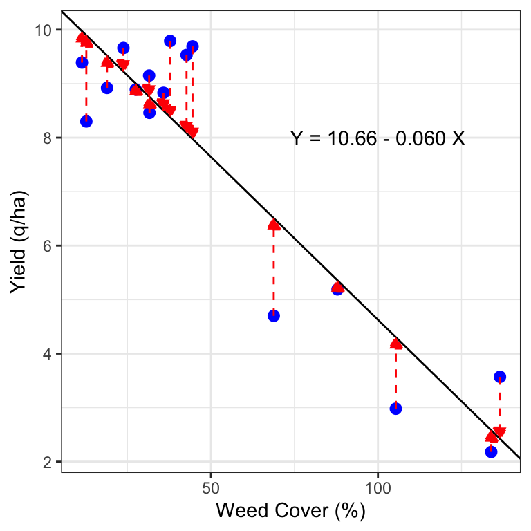
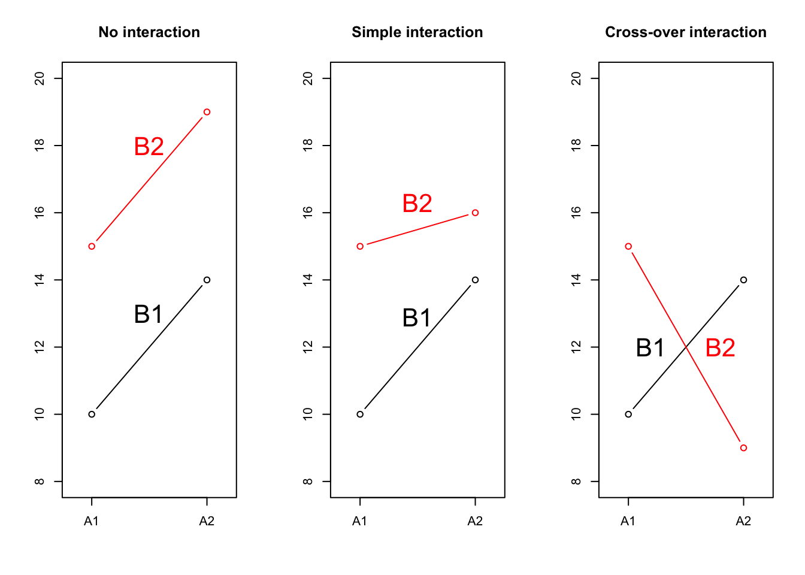

# Riquadro 4.1
# Stima di un modello della 'media'
#
Y <- c(116, 119, 125)
mod <- lm(Y ~ 1)
# Stima dei parametri
coef(mod)
## (Intercept)
## 120
# Valori attesi
fitted(mod)
## 1 2 3
## 120 120 120
# Residui
residuals(mod)
## 1 2 3
## -4 -1 5
#
# Devianza dei residui (RSS)
deviance(mod)
## [1] 42
#
# Deviazione standard dei residui (RMSE)
summary(mod)$sigma
## [1] 4.5825764 Le relazioni causa-effetto
If there is anything in the world which I do firmly believe in, it is the universal validity of the law of causation (Thomas Huxley)
Nel capitolo precedente abbiamo visto come possiamo utilizzare semplici statistiche per descrivere i tratti principali dei nostri dati sperimentali, come la tendenza centrale e la dispersione e, se abbiamo due o più variabili, abbiamo visto come sia possibile descrivere la loro correlazione, utilizzando il coefficiente \(r\) di Pearson.
Nel lavoro di ricerca, è fondamentale stabilire l’esistenza di nessi causa-effetto (relazione di causalità), tra una variabile, solitamente detta “predittore”, in grado di indurre effetti su un’altra variabile, solitamente denominata “risposta”. Ad esempio, è importante stabilire se una variazione del genotipo possa causare un cambiamento nella resa del frumento, oppure se una variazione nella tecnica di lavorazione possa causare un cambiamento nel tempo di emergenza del mais. Secondo John Stuart Mill (1806-1867), ogni relazione causa-effetto, per essere definita tale, dovrebbe soddisfare tre criteri fondamentali (Shadish et al. 2002):
- La causa precede l’effetto (causal priority);
- La causa e l’effetto variano congiuntamente;
- Non ci sono spiegazioni alternative altrettanto valide per la variazione congiunta, oltre alla causalità.
Da questi criteri si deduce come la correlazione, intesa proprio come variazione congiunta, non rappresenti, di per se’, un nesso causa-effetto [correlation does not mean causation; Zaniletti et al. (2023)], poichè valori di \(r\) vicini a 1 o -1 possono essere facilmente osservati anche quando, per le due variabili in studio, non possiamo stabilire alcun tipo di causal priority (ad esempio: altezza e peso delle piante di una specie vegetale), oppure quando vi sia una variabile esterna di confondimento, che funge da causa comune per le due variabili in studio (Aldrich 1995). Al di là delle sottigliezze terminologiche, è evidente che la correlazione ‘non causale’ o addirittura la correlazione spuria, se confuse con un nesso causa-effetto, possono essere fonti di errori interpretativi particolarmente preoccupanti, soprattutto per i dati che provengono da esperimenti osservazionali, nei quali il controllo degli errori può non essere perfetto. Al contrario, gli esperimenti manipolativi controllati, replicati e randomizzati sono molto adatti a stabilire nessi causa-effetto, in quanto permettono di avvicinarsi il più possibile ad una condizione di ceteris paribus, nella quale le unità sperimentali sono identiche, a parte il trattamento sperimentale a cui sono state sottoposte, al quale è quindi ragionevole attribuire ogni differenza nella risposta osservata.
4.1 Modelli statistici
Per descrivere le relazioni causali, possiamo utilizzare i modelli matematici, cioè delle equazioni in cui le osservazioni sperimentali sono prodotte come risultato dell’effetto di uno o più predittori. L’impiego di questi utili strumenti si è sviluppate notevolmente a partire da Galileo, ed ha portato alla creazione di modelli di complessità variabile, dalle semplici equazioni empiriche (Ratkowsky 1990) ai più complessi modelli meccanicistici multiscala (Gherman 2023), che sono anche in grado di descrivere sistemi complessi, come il sistema agrario (vedi Pasley et al. 2023, Gavasso-Rita et al. 2024).
In questo libro trattaremo alcuni semplici modelli empirici, frequentemente utilizzati per descrivere le relazioni causa-effetto negli esperimenti controllati, dove il numero dei predittori è ridotti al minimo livello possibile. I modelli che useremo sono definiti modelli statistici, a causa della presenza di una “componente stocastica”, in grado di tenere conto anche di tutti gli effetti stocastici non allocati dallo sperimentatore, ma derivanti da possibili fonti di errore casuale, come quelle descritte nei capitoli 1 e 2.
4.2 Componenti di un modello
In semplice linguaggio algebrico, possiamo scrivere un modello causa-effetto utilizzando un’equazione generale come la seguente:
\[ Y_E = f(X, \theta)\]
dove \(Y_E\) è l’effetto atteso dello stimolo \(X\), secondo la funzione \(f\), basata su una collezioni di parametri \(\theta\).
Le componenti di questo modello sono la risposta attesa (\(Y_E\)) che è l’oggetto del nostro studio e può assumere le forme più disparate: spesso è numerica, ma a volte rappresenta una qualità. In questo libro consideremo solo la situazione in cui \(Y_E\) è rappresentato da una sola variabile (analisi univariata), ma esistono casi in cui viene osservata ed analizzata la risposta di soggetti in relazione a molte variabili (analisi multivariata).
Lo stimolo sperimentale (\(X\)) è costituito da una o più variabili continue, discrete o categoriche (predittori), che rappresentano i trattamenti sperimentali. Insieme ad \(Y_E\), \(X\) è l’elemento noto di un esperimento, in quanto viene definito a priori in fase di progettazione.
La ‘funzione’ di risposta (\(f\)) è un’equazione, lineare o non-lineare, scelta in base a considerazioni di carattere biologico, o con un approccio puramente empirico, osservando l’andamento della curva di risposta.
I parametri di una funzione (\(\theta\)) sono un insieme di valori numerici che permettono di definire l’equazione di risposta, cioè, ad esempio, di ‘selezionare’ tra le rette del piano rappresentate dall’equazione \(Y = aX + b\), un specifica retta \(Y = 0.7 \, X + 3.1\), che rappresenti i risultati di uno specifico esperimento.
Il predittore può essere rappresentato da una dose; ad esempio un aumento della dose di una sostanza erbicida provoca una diminuzione della crescita delle erbe infestanti. In questo caso, si tratta di un modello dose-risposta, che può essere considerato la traduzione in termini matematici del famoso aforisma di Paracelso (1493-1541): “Omnia venenum sunt: nec sine veneno quicquam existit. Dosis sola facit, ut venenum non fit.” (Cosa c’è che non sia veleno? Tutte le cose sono veleno e nulla è senza veleno. Soltanto la dose determina cosa sia un veleno).
In pratica, la realtà è più complessa delle nostre aspettative e, a causa di errori sperimentali e altri effetti di natura puramente casuale, non osserviamo mai il risultato atteso \(Y_E\), ma osserviamo un valore diverso \(Y_O \neq Y_E\). Dobbiamo quindi ampliare il modello aggiungendo la componente stocastica \(\varepsilon\):
\[ Y_O = f(X, \theta) + \varepsilon\]
cioè il cosiddetto ‘residuo’, la discrepanza tra ciò che prevede il modello e ciò che effettivamente osserviamo:
\[\varepsilon = Y_O - Y_E \]
In un esperimento con \(n\) unità sperimentali, abbiamo \(n\) residui, con media pari a 0 e devianza, usualmente denominata RSS (dall’inglese Residual Sum of Squares):
\[RSS = \sum_{i = 1}^n{\left( Y_{O_i} - Y_{E_i} \right)^2}\]
La deviazione standard dei residui di solito è denominata RMSE (dall’inglese Root Mean Squared Error) ed è ottenuta, in ambito inferenziale, come \(RMSE = \sqrt{\textrm{SS}/(n - p)}\), dove \(n\) è il numero delle osservazioni e \(p\) è il numero di parametri stimati. Utilizzando is the number of observations and \(P\) is the number of estimated parameters. A grandi linee, si può dire che il valore di RMSE misura quanto “cattivo” è il modello: tanto più è alto, quanto più le previsioni si discostano dalle osservazioni, inficiando la capacità del modello di descrivere una certa relazione causa-effetto.
4.3 Lavorare con i modelli
Quando utilizziamo un modello per interpretare i risultati di un esperimento e definire le relazioni causa-effetto in studio, dobbiamo seguire un protocollo di lavoro adeguato, che proviamo a riassumere nel seguente schema:
- definire un modello statistico potenzialmente capace di descrivere adeguatamente le relazioni causa-effetto in studio, traducendo in termini matematici l’ipotesi scientifica di partenza. Questo modello sarà posto nella sua forma generale e sarà basato su una serie di parametri dal valore ignoto (\(\theta\) e \(\sigma\)).
- Eseguire l’esperimento e raccogliere i dati.
- Utilizzare il set di dati per assegnare valori precisi a tutti i parametri ignoti (fitting del modello o, in alcune applicazioni, calibrazione del modello).
- Valutare se il modello parametrizzato fornisca una descrizione accurata dei dati sperimentali (valutazione del modello).
- Se necessario, in presenza di ipotesi scientifiche alternative tradotte in altrettanti modelli matematici, selezionare il modello migliore quelli proposti (confronto dei modelli).
4.4 Fitting di un modello
Il fitting del modello viene solitamente eseguito dall’algoritmo dei “minimi quadrati”, che consiste nel selezionare i valori dei parametri che minimizzano la somma dei residui al quadrato (RSS)
In generale, la minimizzazione dei quadrati dei residui non viene eseguita mediante calcoli manuali, in quanto è molto più semplice avvalersi delle funzioni di adattamento più adatte in R. In particolare, per i modelli lineari utilizzeremo la funzione lm(), con la seguente sintassi:
mod <- lm(Y ~ X dati = set di dati)Il primo argomento è l’equazione che vogliamo adattare: sul lato sinistro dobbiamo specificare il nome della variabile di risposta, la ‘tilde’ (~) significa ‘è una funzione di’ e sostituisce il segno ‘=’, mentre, sul lato destro, dobbiamo specificare il nome del/i predittore/i. Come secondo argomento, se necessario, forniamo il nome del dataset in cui sono archiviate le variabili. Non dobbiamo specificare l’intercetta e il termine stocastico \(\varepsilon\), che sono inclusi per impostazione predefinita.
Per evitare errori, è necessario ricordare che un predittore \(X\) può essere costituito da una variabile quantitativa oppure da una variabile categorica e i due tipi di variabili identificano tipologie di modelli molto diversi tra di loro. Può capitare di avere a che fare con un predittore qualitativo per cui le classi sono espresse in formato numerico, come ad esempio i blocchi, che potrebbero essere indicati con i valori 1, 2, 3, e 4, senza che questi valori rappresentino veramente una quantità. In tutte queste situazione e, suggerirei in ogni caso, quando intendiamo procedere al fitting di un modello in cui qualcuno dei predittori è una variabile categorica, dovremmo esplicitamente trasformarla in un vettore di tipo ‘factor’, per evitare che R la interpreti erroneamente come una quantità, adattando il modello sbagliato. La trasformazione si effettua, nel modo più semplice, con il codice seguente:
X <- factor(X)Un modello completamente specificato può fornire una buona descrizione dei dati sperimentali, postulando l’esistenza di un meccanismo causa-effetto ben definito. Con la dovuta prudenza, questo modello può essere utilizzato per fare previsioni; ad esempio, se i dati sperimentali hanno suggerito che l’effetto della concimazione azotata sul frumento può essere rappresentata con una retta con equazione \(Y_E = b_0 + b_1 \, X\), dove \(b_0 = 65\) e \(b_1 = 0.1\), allora si potrebbe concludere che una concimazione con 150 kg/ha di azoto dovrebbe, prevedibilmente, dare come risultato un livello di resa \(Y_E = 80\) quintali per ettaro.
4.5 Esempio 4.1: il ‘modello della media’
Abbiamo condotto un esperimento misurativo, in cui abbiamo raccolto tre campioni di acqua da un pozzo, per misurare la concentrazione di una sostanza xenobiotica. I risultati sono 116, 119, 125 mg/L e vogliamo calcolare la media e la deviazione standard dei tre campioni.
Questo problema è piuttosto semplice e potrebbe essere meglio risolto utilizzando semplici statistiche descrittive (vedi Capitolo 3); tuttavia, è interessante vedere come lo stesso problema può essere posto in una logica di ‘model fitting’: non abbiamo alcun predittore e, pertanto, possiamo supporre che le osservazioni siano generate in base al modello della media: \(Y_i = \mu + \varepsilon_i\), dove l’elemento stocastico ha media 0 e una deviazione standard \(\sigma\).
Assegnare un valore a tutti i parametri sconosciuti è banale, utilizzando i semplici calcoli mostrati nel Capitolo 3 (vale a dire, \(\mu = 120\) e \(\sigma = 4.58\)). Tuttavia, possiamo ottenere gli stessi risultati utilizzando l’approccio di minimizzazione dei minimi quadrati, come mostrato nel riquadro seguente. Si noti che utilizziamo ‘1’ come lato destro dell’equazione del modello, poiché non abbiamo alcun predittore..
Il modello della media descrive una situazione in cui non abbiamo predittori e, pertanto, non vi sono nessi causa-effetto; di conseguenza, è il peggior modello possibile, il punto di riferimento rispetto al quale valutare ogni altro modello alternativo. Per queste sue caratteristiche, il modello della media è spesso definito come modello nullo.
4.6 Esempio 4.2: un predittore quantitativo
L’algoritmo dei minimi quadrati è facile da comprendere se consideriamo un esperimento in cui la resa del mais (la risposta, in t/ha) sia stata determinata in funzione del ricoprimento delle piante infestanti (il predittore, in %), determinato all’inizio del ciclo colturale. In una situazione del genere, potremmo ipotizzare un modello lineare (linea retta) del tipo: \(Y_i = b_0 + b_1 \, X_i + \varepsilon_i\), che è solitamente noto come modello di regressione lineare semplice.
I due parametri \(b_0\) e \(b_1\) rappresentano, rispettivamente, l’intercetta (livello di resa senza infestanti) e la pendenza (variazione della resa per ogni aumento unitario del ricoprimento). Per stimare questi due valori, possiamo usare la funzione ‘lm()’, che produce i risultati mostrati nella Figura 4.1.
# Riquadro 4.2
#
# Fitting a simple linear regression model
# Entering the data
library(statforbiology)
dataset <- getAgroData("WeedCover")
head(dataset)
## WeedCover Yield
## 1 105.35 2.98
## 2 27.50 8.89
## 3 68.80 4.70
## 4 23.80 9.66
## 5 12.70 8.30
## 6 42.70 9.53
# Fitting the model
mod <- lm(Yield ~ WeedCover, data = dataset)
# Inspecting the estimates
coef(mod)
## (Intercept) WeedCover
## 10.65979798 -0.06033652
# Fitted values
fitted(mod)
## 1 2 3 4 5 6 7 8
## 4.303346 9.000544 6.508646 9.223789 9.893524 8.083429 8.759198 8.379078
## 9 10 11 12 13 14 15 16
## 9.519438 8.499751 7.974823 9.971962 8.753164 5.356218 2.580738 2.422355
# Residuals
residuals(mod)
## 1 2 3 4 5 6 7
## -1.3233458 -0.1105437 -1.8086455 0.4362112 -1.5935242 1.4465714 0.3908023
## 8 9 10 11 12 13 14
## 1.4109224 -0.5994378 0.3302494 1.7151771 -0.5819617 -0.2931640 -0.1662180
## 15 16
## -0.4007382 1.1476452
# RSS
deviance(mod)
## [1] 17.34042
# RMSE
summary(mod)$sigma
## [1] 1.112925
4.7 Esempio 4.3: un predittore nominale
Immaginiamo un esperimento sul campo per confrontare la resa di quattro genotipi di avena (denominati A, B, C e D), con un disegno completamente randomizzato con tre repliche. I risultati (in tonnellate per ettaro) sono mostrati nella Tabella 4.1.
| Genotype | 1 | 2 | 3 |
|---|---|---|---|
| A | 4.50 | 4.65 | 4.59 |
| B | 3.70 | 3.38 | 3.58 |
| C | 4.17 | 3.94 | 4.14 |
| D | 4.76 | 4.48 | 4.55 |
In questo esperimento, abbiamo una risposta quantitativa (la resa) e un fattore nominale (il genotipo) e la relazione causa-effetto tra queste due variabili può essere descritta con il modello seguente:
\[Y_i = \mu + \alpha_j + \varepsilon_i\]
Questo modello postula che ogni osservazione \(Y_i\) derivi dal valore \(\mu\) (la cosiddetta intercetta) più le quantità \(\alpha_j\), che dipendono dal genotipo \(j\), più gli effetti stocastici \(\varepsilon_i\), che sono specifici per ogni osservazione ed hanno media 0 e una deviazione standard pari a \(\sigma\).
Per comprendere il significato biologico di \(\mu\) ed \(\alpha\) dobbiamo entrare un po’ di più nei dettagli matematici. Consideriamo la prima osservazione \(Y_1 = 4.5\); dobbiamo stimare tre valori (\(\mu\), \(\alpha_1\) e \(\varepsilon_1\)) che, sommati, restituiscano questa osservazione. Chiaramente il problema è indeterminato, in quanto esistono infinite triplette di valori, che, sommate, restituiscono 4.5; pertanto è necessario imporre dei vincoli su alcuni parametri del modello (parametrizzazioni del modello). Un vincolo molto comune è \(\alpha_1 = 0\) (vincolo sul trattamento):
\[\left\{ {\begin{array}{l} \mu_1 = \mu + \alpha_1 = \mu + 0\\ \mu_2 = \mu + \alpha_2 \\ \mu_3 = \mu + \alpha_3 \\ \mu_4 = \mu + \alpha_4 \end{array}} \right.\]
Con tale vincolo, \(\mu\) è la media del primo genotipo (in R: primo in ordine alfabetico), mentre \(\alpha_2\), \(\alpha_3\) e \(\alpha_4\) sono, rispettivamente, le differenze tra le medie del secondo, terzo e quarto genotipo, rispetto al primo. In generale, con questa parametrizzazione, i parametri del modello sono medie o differenze tra medie.
Un altro possibile vincolo è \(\sum{\alpha_j} = 0\) (vincolo sulla somma). Se prendiamo l’equazione precedente e sommiamo tutti i membri otteniamo:
\[\mu_1 + \mu_2 + \mu_3 + \mu_4 = 4 \mu + \sum{\alpha_j}\]
Imponendo il vincolo di somma a zero otteniamo:
\[\mu_1 + \mu_2 + \mu_3 + \mu_4 = 4 \mu\]
e quindi a:
\[\mu = \frac{\mu_1 + \mu_2 + \mu_3 + \mu_4}{4}\]
Con questa parametrizzazione \(\mu\) è la media generale dei dati, mentre i valori \(\alpha_j\) rappresentano le differenze tra le medie dei trattamenti e la media generale (effetti dei trattamenti): valori \(\alpha\) positivi ed elevati identificano i genotipi superiori alla media, mentre valori \(\alpha\) elevati, ma negativi identificano i genotipi inferiori alla media. In generale, con questa parametrizzazione, i parametri del modello rappresentano medie ed effetti.
Un terzo possibile vincolo si ottiene rimuovendo l’intercetta (ovvero, imponendo che \(\mu = 0\)). In questo caso, i valori di \(\alpha_j\) saranno le medie dei genotipi ed il modello riduce a:
\[Y_i = \mu_j + \varepsilon_i\]
La selezione dei vincoli spetta all’utente, a seconda degli obiettivi dell’esperimento. In R, il vincolo del trattamento è utilizzato di default, sebbene gli altri vincoli possano essere facilmente ottenuti, utilizzando la codifica appropriata.
La stima dei parametri del modello potrebbe essere facilmente eseguita a mano, ma noi utilizziamo la funzione lm() in R, comme illustrato nel riquadro sottostante. In questo riquadro, possiamo anche vedere come sia possibile modificare la parametrizzazione, impostando l’argomento ‘contrasts’ e passando un elenco di fattori associati alla parametrizzazione richiesta. Ad esempio, se utilizziamo Treat = "contr.sum", otteniamo il vincolo sulla somma; di conseguenza, l’effetto dell’ultimo genotipo non è mostrato, perché è vincolato ad essere l’opposto della somma degli altri tre effetti. Invece, la rimozione dell’intercetta è possibile utilizzando -1 sul lato destro dell’espressione, come mostrato di seguito.
Ovviamente, esistono diversi altri metodi per modificare la parametrizzazione, sia globalmente (per l’intera sessione R) sia a livello di singola analisi; potete trovare altre informazioni, ad esempio, in Faraway (2025).
# Riquadro 4.3
#
# Adattamento di un modello con un predittore nominale
#(ANOVA ad una via)
#
# Caricamento dei pacchetti e dei dati
library(statforbiology)
dataset <- getAgroData("Oat1L")
dataset$Genotype <- factor(dataset$Genotype) # Linea opzionale
#
# Adattamento di un modello col vincolo sul trattamento (default)
mod <- lm(Yield ~ Genotype, data = dataset)
#
# Stima dei parametri
coef(mod)
## (Intercept) GenotypeB GenotypeC GenotypeD
## 4.58000000 -1.02666667 -0.49666667 0.01666667
#
# Residui
residuals(mod)
## 1 2 3 4 5 6
## -0.08000000 0.07000000 0.01000000 0.14666667 -0.17333333 0.02666667
## 7 8 9 10 11 12
## 0.08666667 -0.14333333 0.05666667 0.16333333 -0.11666667 -0.04666667
#
# Devianza dei residui (RSS)
deviance(mod)
## [1] 0.1374
#
# Deviazione standard del residui (RMSE)
summary(mod)$sigma
## [1] 0.1310534
# Adattamento dello stesso modello ma con vincolo sulla somma
mod2 <- lm(Yield ~ Genotype, data = dataset, contrasts = list(Genotype = "contr.sum"))
coef(mod2)
## (Intercept) Genotype1 Genotype2 Genotype3
## 4.2033333 0.3766667 -0.6500000 -0.1200000
#
# Adattamento dello stesso modello, ma con vincolo sull'intercetta
mod3 <- lm(Yield ~ Genotype - 1, data = dataset)
coef(mod3)
## GenotypeA GenotypeB GenotypeC GenotypeD
## 4.580000 3.553333 4.083333 4.596667Ora che il modello è completamente specificato, abbiamo tutti gli ingredienti per descrivere le 12 osservazioni, sommando \(\mu + \alpha_j + \varepsilon_i\); ad esempio, per la prima osservazione, appartenente al primo genotipo, abbiamo:
\[y_1 = 4.5 = 4.533 + 0 - 0.033\] mentre, per la quarta osservazione, appartenente al 2° genotipo, abbiamo:
\[y_4 = 3.9 = 4.533 - 0.7 + 0.067\]
4.8 L’analisi della varianza (ANOVA)
In questo secondo esempio abbiamo descritto una relazione causa-effetto, tramite un modello contenente un predittore. L’RMSE (\(\sigma\)) è uguale a 0.131, ma questa non è una buona metrica per capire se la relazione causa-effetto è rilevante o meno. Una possibilità è quella di dividere l’RMSE per la media dei valori osservati, per ottenere il coefficiente di variabilità (RRMSE: Relative Root Mean Squared Error), che è 0.031 (o 3.1%), il che indica che l’errore residuo è piuttosto piccolo, rispetto al valore medio atteso.
Un altro indicatore per descrivere la bontà della relazione causa-effetto definita dal modello è il cosiddetto coefficiente di determinazione (R2), ottenuto sottraendo da 1 il rapporto tra la devianza dei residui e la devianza totale delle osservazioni (che poi sarebbe la devianza dei residui del modello nullo). Nel nostro caso, il modello nullo è ottenuto trascurando l’effetto del genotipo e la devianza dei residui è quella indicata nel box sottostante:
modnull <- lm(Yield ~ 1, data = dataset)
deviance(modnull)
## [1] 2.337867Il coefficiente di determinazione è quindi:
\[R^2 = 1 - \frac{SS_{res}}{SS_{tot}} = 1 - \frac{0.1374}{2.337867} = 0.94123\]
cosa che può essere verificata utilizzando il codice R:
summary(mod)$r.squared
## [1] 0.9412285Il coefficiente di determinazione varia da 0 ad 1, più è alto il valore tanto migliore è la bontà del modello.
Oltre a queste statistiche (RMSE, RRMSE e R2), vi è una tecnica famosissima per valutare l’entità dell’evidenza in favore dell’esistenza di una relazione causa effetto ben definita; questa tecnica si chiama Analisi della Varianza (ANOVA) ed è stata originariamente ideata da Ronald Fisher durante gli anni ’30 del XX secolo; oggi è ancora molto utilizzata, seppure in una forma leggermente diversa da quella originale.
Il principio di fondo è che, considerando un modello che contenga almeno un predittore, è sempre possibile associare allo stesso dataset un secondo modello ‘nullo’ (modello della media), ottenuto dal precedente per rimozione del predittore. Ad esempio, con riferimento all’esempio 2, abbiamo già visto che il modello ANOVA è:
Yield ~ Genotypementre il modello nullo è:
Yield ~ 1Rimuovere l’effetto del genotipo dal modello non può che indurre un incremento dei residui, dato che non si tiene più in considerazione che parte della differenza tra le osservazioni è dovuto al fatto che esse appartengono a genotipi diversi. Infatti, il codice sovrastante e sottostante mostrano che la devianza dei residui nel modello ad uns via è pari a:
epsilon <- residuals(mod)
RSS <- sum(epsilon^2)
RSS
## [1] 0.1374mentre la devianza dei residui del modello nullo (uguale alla devianza totale delle osservazioni), è pari a:
# Residual deviance null model
RSS.null <- sum(residuals(modnull)^2)
RSS.null
## [1] 2.337867Insomma, rimuovendo l’effetto del genotipo, il modello è ‘peggiorato’, con un incremento dei residui quantificabile come differenza:
# Contribution of genotype effect
SS_g <- RSS.null - RSS
SS_g
## [1] 2.200467È evidente che più è grande questa differenza, più è grande l’effetto del genotipo. In altre parole, abbiamo appena scomposto la devianza totale delle osservazioni (\(SS_{tot} = 2.337867\)) in due quote, una dovuta all’effetto causale del trattamento sperimentale (\(SS_g = 2.200\)) e l’altra dovuta a tutti gli altri effetti ignoti di natura casuale (errore sperimentale: \(RSS = 2.337867\)). Questa seconda quota costituisce una specie di ‘rumore di fondo’, contro il quale si può valutare il ‘segnale’, cioè l’intensità dell’effetto del trattamento sperimentale.
Come abbiamo visto nel Capitolo 3, non possiamo confrontare direttamente \(SS_g\) e \(RSS\), poiché queste due devianze hanno un diverso numero di gradi di libertà (DF); il numero di DF per il trattamento è uguale al numero dei suoi livelli meno uno (\(DF_g\) = 3), mentre il numero di gradi di libertà per la devianza residua \(RSS\) è \(p \times (k -1)\), dove \(p\) è il numero di trattamenti e \(k\) è il numero di repliche, supponendo che questo sia costante tra i trattamenti. Di conseguenza, \(DF_{RSS} = 4 \times (3 - 1) = 8\). Possiamo quindi calcolare le relative varianze (Mean Squares: MS) come segue:
# Varianza del genotipo
MS_g <- SS_g/3
MS_g
## [1] 0.7334889
#
# Varianza del residuo
RMS <- RSS/8
RMS
## [1] 0.017175Queste due varianze (trattamento e residuo) possono essere confrontate direttamente, utilizzando il cosiddetto rapporto F:
\[F = \frac{MS_g}{RMS} = \frac{0.733}{0.017} = 43.12\]
Il nome ‘rapporto F’ deriva da Fisher, che lo inventò. Mostra che la variabilità imposta dal trattamento sperimentale è più di 10 volte superiore alla variabilità dovuta al rumore di fondo (errore sperimentale), il che supporta l’idea che l’effetto causale del genotipo sulla resa sia molto rilevante. In termini generali, più alto è il rapporto F, più forte è il nesso causa-effetto. Possiamo riassumere questi risultati nella cosiddetta tabella ANOVA, che si ottiene facilmente utilizzando il metodo anova() con R (il rapporto F differisce per il diverso grado di approssimazione).
anova(mod)
## Analysis of Variance Table
##
## Response: Yield
## Df Sum Sq Mean Sq F value Pr(>F)
## Genotype 3 2.2005 0.73349 42.707 2.866e-05 ***
## Residuals 8 0.1374 0.01717
## ---
## Signif. codes: 0 '***' 0.001 '**' 0.01 '*' 0.05 '.' 0.1 ' ' 1Rispetto a quanto esposto in precedenza, la tabella ottenuta con R contiene solo un valore che non abbiamo ancora spiegato, il cosidetto P-level, che si trova all’estrema destra (P = 2.866e-05, cioè \(2.866 \times 10^{-5}\)). Si tratta di un indicatore inferenziale che sarà illustrato nei Capitoli seguenti anche se possiamo anticipare che più il P-level è basso, più è forte l’evidenza scientifica contro l’ipotesi ‘nulla’ che il trattamento sperimentale (in questo caso il genotipo) non abbia avuto alcun effetto sulla variabile risposta (produzione della coltura). Ancora più in dettaglio, anticipiamo che, se il P-level è inferiore a 0.05 ed è accompagnato da uno o più asterischi, si può concludere che l’effetto del trattamento è statisticamente significativo.
4.9 Example 4.4: due predittori nominali
Consideriamo lo stesso esperimento dell’esempio precedente ed immaginiamo che sia stato disegnato a blocchi randomizzati (la prima osservazione di ogni genotipo è stata presa nel primo blocco, la seconda nel secondo blocco e così via). In questo caso, il nesso causa-effetto e, di conseguenza, il modello interpretativo sono diversi, perché la resa dipende da due fattori sperimentali, ovvero il genotipo e il blocco. L’equazione è:
\[ Y_{ij} = \mu + \gamma_i + \alpha_j + \varepsilon_{ij}\]
dove \(Y_{ij}\) è la resa parcellare nell’ \(i\)esimo blocco e per il \(j\)esimo genotipo, \(\mu\) è l’intercetta, \(\gamma_i\) è l’effetto del \(i\)esimo blocco, \(\alpha_j\) è l’effetto del \(j\)esimo genotipo e \(\varepsilon\) è l’errore residuo di ogni parcella, con deviazione standard pari a \(\sigma\). Come abbiamo fatto per il modello ANOVA ad una via, dobbiamo porre dei vincoli sui valori \(\alpha\) e \(\gamma\), in modo che i parametri del modello siano stimabili; in particolare, imporremo che \(\alpha_1 = \gamma_1 = 0\), in modo che \(\mu\) è la produzione nel primo blocco e col primo genotipo (in R, convenzionalmente il primo in ordine alfabetico). Abbiamo quindi 3 parametri da stimare per l’effetto del genotipo e 2 parametri da stimare per l’effetto del blocco, oltre a \(\sigma\).
La stima dei parametri del modello può essere eseguita con R, aggiungendo l’effetto blocco all’equazione del modello:
dataset <- getAgroData("oat1LRCBD")
dataset$Block <- factor(dataset$Block)
head(dataset)
## Genotype Block Yield
## 1 A 1 4.50
## 2 A 2 4.65
## 3 A 3 4.59
## 4 B 1 3.70
## 5 B 2 3.38
## 6 B 3 3.58
mod <- lm(Yield ~ Genotype + Block, data = dataset)Le stime dei parametri sono:
# Alpha e beta
coef(mod)
## (Intercept) GenotypeB GenotypeC GenotypeD Block2 Block3
## 4.65916667 -1.02666667 -0.49666667 0.01666667 -0.17000000 -0.06750000
#
# Sigma
summary(mod)$sigma
## [1] 0.1145886I residui e la loro devianza sono:
epsilon <- residuals(mod)
RSS <- sum(epsilon^2)
RSS
## [1] 0.07878333Come previsto, i residui di questo modello sono più piccoli e quindi hanno una devianza minore di quelli del modello precedente, senza l’effetto del blocco. La rimozione dell’effetto del blocco fa si che la devianza del residuo aumenti di una quota pari a 0.059, che misura appunto l’effetto del blocco (devianza del blocco: SSb). Se consideriamo invece un modello ridotto, contenente solo il blocco, ma non il genotipo (quindi rimuoviamo dal modello l’effetto del genotipo), possiamo misurare la devianza del fattore sperimentale rimosso, che, coerentemente con quanto visto in precedenza, ammonta a 2.200.
# Rimozione dei blocchi
mod2 <- lm(Yield ~ Genotype, data = dataset) # Stesso modello di prima
deviance(mod2)
## [1] 0.1374
SS_b <- deviance(mod2) - RSS
SS_b
## [1] 0.05861667
# Rimozione dei genotipi
mod3 <- lm(Yield ~ Block, data = dataset)
deviance(mod3)
## [1] 2.27925
SS_g <- deviance(mod3) - RSS
SS_g
## [1] 2.200467Il numero di gradi di libertà è, rispettivamente, 11 per la devianza totale (\(SS_{tot} = n - 1 = 12 - 1 = 11\)), 3 per i genotipi (numero dei genotipi meno 1) e 2 per i blocchi (numero dei blocchi meno 1); per sottrazione, arriviamo a 6 DF per la devianza del residuo. A questo punto possiamo calcolare le varianze dei blocchi, dei genotipi e del residuo, che è attribuibile a tutte le sorgenti di variabilità casuali non controllate (errore sperimentale o rumore di fondo). Pssiamo quindi calcolare due rapporti F, uno per l’effetto del blocco e uno per l’effetto del genotipo; per comodità, possiamo saltare tutti i calcoli manuali e arrivare direttamente alla tabella ANOVA finale usando il metodo ‘anova()’ in R.
anova(mod)
## Analysis of Variance Table
##
## Response: Yield
## Df Sum Sq Mean Sq F value Pr(>F)
## Genotype 3 2.20047 0.73349 55.8612 8.916e-05 ***
## Block 2 0.05862 0.02931 2.2321 0.1885
## Residuals 6 0.07878 0.01313
## ---
## Signif. codes: 0 '***' 0.001 '**' 0.01 '*' 0.05 '.' 0.1 ' ' 1I rapporti F suggeriscono che l’effetto causale del genotipo è elevato e significativo (presenza di asterischi), mentre l’effetto blocco non è significativo, perché il P-level è maggiore di 0.05.
4.10 Example 4.5: due predittori nominali con interazione
Immaginiamo che l’esperimento presentato nell’Esempio 1 sia stato ripetuto in un’altra località, utilizzando sempre un disegno completamente randomizzato. I dati osservati sono riportati nella Tabella Table 4.2.
| Location | Genotype | Yield |
|---|---|---|
| LOC1 | A | 4.50 |
| LOC1 | A | 4.65 |
| LOC1 | A | 4.59 |
| LOC1 | B | 3.70 |
| LOC1 | B | 3.38 |
| LOC1 | B | 3.58 |
| LOC1 | C | 4.17 |
| LOC1 | C | 3.94 |
| LOC1 | C | 4.14 |
| LOC1 | D | 4.76 |
| LOC1 | D | 4.48 |
| LOC1 | D | 4.55 |
| LOC2 | A | 5.40 |
| LOC2 | A | 5.50 |
| LOC2 | A | 4.10 |
| LOC2 | B | 5.80 |
| LOC2 | B | 7.10 |
| LOC2 | B | 5.80 |
| LOC2 | C | 4.20 |
| LOC2 | C | 4.50 |
| LOC2 | C | 4.80 |
| LOC2 | D | 5.00 |
| LOC2 | D | 6.20 |
| LOC2 | D | 5.60 |
In questo esperimento abbiamo due fattori incrociati, ma, a differenza dell’esempio precedente, abbiamo tre repliche per ciascuna delle otto combinazioni tra i livelli di genotipo e località. In questo modo, oltre agli effetti di genotipo e località, possiamo anche valutare la cosiddetta interazione tra i due fattori sperimentali, che è un’informazione molto importante.
4.11 Interazione tra fattori sperimentali
Per comprendere meglio il concetto di interazione, osserviamo la Figura 4.2, dove sono mostrate le medie di quattro trattamenti, ottenuti dalla combinazione fattoriale di un trattamento A con due livelli (A1 e A2) e di un trattamento B con altrettanti livelli (B1 e B2). Nel grafico, ogni combinazione è rappresentata da un simbolo.
Concentriamoci un attimo sul grafico di sinistra e consideriamo la prima combinazione in ordine alfabetico (A1B1): per questa, la media è pari a 10. Se passiamo da A1 ad A2, fermo restando B1, l’incremento è + 4. Se invece passiamo da B1 a B2, fermo restando A1, l’incremento è + 5. Si deduce che, se gli effetti fossero puramente additivi, la media di A2B2 dovrebbe essere pari a 10 + 4 + 5 = 19, in quanto vengono modificati entrambi i livelli, da A1 ad A2 e da B1 a B2. Vediamo che l’osservazione conferma questa aspettativa di additività degli effetti e di mancanza di interazione.
Al contrario, nel grafico centrale vediamo che il risultato osservato di A2B2 non può essere ottenuto per semplice somma di effetti, perché, a fronte di un risultato atteso pari a 19 otteniamo invece 16. Evidentemente, vi è qualcosa in questa combinazione che altera l’effetto congiunto di A e B. Questo qualcosa può essere quantificato con il valore -3, così che la media A2B2 è pari a 10 + 4 + 5 - 3 = 16. Il valore -3 rappresenta la mancanza di additività o interazione; in questo caso si tratta di interazione semplice, in quanto la graduatoria dei trattamenti non cambia: A2 è sempre meglio di A1 e B2 è sempre meglio di B1, anche se gli effetti non sono quelli previsti.
Nel grafico di sinistra la situazione è analoga, ma più estrema: l’effetto dell’interazione è -10 e comporta un’inversione della graduatoria, per cui parliamo di interazione cross-over.

Perchè siamo così interessati all’interazione e, in particolare, all’interazione cross-over? Esaminiamo più da vicino i valori nel grafico a destra in Figura 4.2, riportandoli nella tabella Table 4.3, insieme alle medie dei quattro livelli A1, A2, B1 e B2. Le medie delle combinazioni sono dette medie di cella, mentre le medie dei livelli principali sono dette medie marginali, perché si trovano al margine della tabella.
| B1 | B2 | Media | |
|---|---|---|---|
| A1 | 10.0 | 15.0 | 12.0 |
| A2 | 14.0 | 9.0 | 12.0 |
| Media | 12.5 | 11.5 | 12.0 |
Se guardassimo solo le medie marginali, avremmo l’impressione sbagliata che il fattore A, da solo, non ha alcun effetto (le medie A1 e A2 sono uguali) e che il fattore B ha solo un piccolissimo effetto. La realtà è invece che entrambi i fattori hanno un grande effetto, ma la presenza dell’interazione lo nasconde completamente, impedendoci di raggiungere conclusioni attendibili guardando ai due fattori, uno separatamente dall’altro.
4.12 Example 4.5 (segue)
Tornando al nostro esempio, è chiaro che le produzioni osservate sono determinate dall’effetto di:
- genotipo
- località
- interazione ‘genotipo \(\times\) località’
Il modello lineare può essere così definito:
\[Y_{ij} = \mu + \alpha_i + \beta_j + \alpha\beta_{ij} + \varepsilon_{ij}\]
dove \(\mu\) è l’intercetta (produzione del primo genotipo nella prima località, sotto il vincolo che \(\alpha_1 = \beta_1 = 0\)), \(\alpha_i\) è la differenza tra il genotipo \(i\)esimo ed il primo in ordine alfabetico, \(\beta_j\) è la differenza tra la località \(j\)esima e la prima in ordine alfabetico e \(\alpha\beta_{ij}\) è l’interazione tra il genotipo \(i\)esimo e la località \(j\)esima (sotto i vincoli che \(\alpha\beta_{1.} = \alpha\beta_{.1} = 0\)). I residui sono quantificati dai valori \(\varepsilon_{ij}\), con media uguale a 0 e deviazione standard uguale a \(\sigma\).
Per stimare i parametri del modello, possiamo utilizzare R, considerando che il termine di interazione viene codificato con l’operatore ‘:’, ad esempio:
Y ~ A + B + A:Bche può essere abbreviato come:
Y ~ A * Bmod <- lm(Yield ~ Genotype * Location, data = dataset)
# Stima dei parametri
coef(mod)
## (Intercept) GenotypeB GenotypeC
## 4.580000000 -1.026666667 -0.496666667
## GenotypeD LocationLOC2 GenotypeB:LocationLOC2
## 0.016666667 0.420000000 2.260000000
## GenotypeC:LocationLOC2 GenotypeD:LocationLOC2
## -0.003333333 0.583333333
#
# Sigma
summary(mod)$sigma
## [1] 0.4598958L’analisi della varianza viene eseguita rimuovendo dal modello i tre termini uno alla volta, ma rispettando un criterio di marginalità, che tenga conto del fatto che l’interazione viene dopo che sono stati inseriti gli effetti principali che la costituiscono e, quindi, dovrebbe essere omessa per prima e non dovrebbe essere lasciata nel modello, quando uno degli effetti principali coinvolti viene rimosso. Lo schema è illustrato nel box seguente.
RSS <- deviance(mod)
#
# rimozione dell'interazione
modred <- lm(Yield ~ Genotype + Location, data = dataset)
SSint <- deviance(modred) - RSS
SSint
## [1] 5.147233
#
# rimozione del genotipo E dell'interazione
modred <- lm(Yield ~ Location, data = dataset)
SSloc <- deviance(modred) - RSS - SSint
SSloc
## [1] 2.113233
#
# rimozione della località E dell'interazione
modred <- lm(Yield ~ Genotype, data = dataset)
SSgen <- deviance(modred) - RSS - SSint
SSgen
## [1] 7.6614Anche in questo esempio, abbiamo suddiviso la variabilità totale dei dati in quattro termini, tre dei quali sono correlati all’effetto causale, mentre il quarto è correlato a tutti gli altri effetti casuali. In pratica, i calcoli manuali non sono necessari, perchè possiamo utilizzare la funzione ‘anova()’ in R. Nella tabella sottostante, l’unico elemento di cui non abbiamo parlato finora è il numero di gradi di libertà per l’interazione, che è uguale al prodotto del numero di DF per gli effetti principali.
anova(mod)
## Analysis of Variance Table
##
## Response: Yield
## Df Sum Sq Mean Sq F value Pr(>F)
## Genotype 3 2.1132 0.7044 3.3305 0.046228 *
## Location 1 7.6614 7.6614 36.2234 1.788e-05 ***
## Genotype:Location 3 5.1472 1.7157 8.1121 0.001646 **
## Residuals 16 3.3841 0.2115
## ---
## Signif. codes: 0 '***' 0.001 '**' 0.01 '*' 0.05 '.' 0.1 ' ' 1Vediamo che tutti gli effetti in gioco (genotipo, località ed interazione) sono significativi ed hanno quindi un nesso causa-effetto rilevante sulla produzione della coltura. La presnza di un’interazione significativa mostra che, probabilmente, la valutazione dei genotipi performanti non è comune alle due località anche se questa affermazione richiede analisi successive che vedremo in seguito.
4.13 Dati non bilanciati
Prima di concludere questo capitolo, è necessario sottolineare che esistono diversi metodi per calcolare la somma dei quadrati per gli effetti del modello, che non portano, necessariamente, agli stessi risultati. In particolare, questo aspetto va attentamente considerato quando i dati non sono ‘bilanciati’, ovvero quando il numero di repliche è diverso per diversi trattamenti. Il metodo di calcolo che abbiamo proposto in questo Capitolo è basato sulle seguenti operazioni:
- fitting del modello completo;
- rimozione dell’effetto in studio e fitting del modello ridotto;
- calcolo della devianza dell’effetto rimosso per differenza tra le devianza del residuo del modello ridotto e quella del modello completo.
Questo metodo di calcolo produce le cosiddette somme dei quadrati marginali e non è uguale al metodo utilizzato nella funzione anova() in R, che produce invece le somma dei quadrati sequenziali. Non ci siamo accorti della differenza perché i due metodi danno gli stessi risultati quando i dati sono ‘bilanciati’, ma quando i dati non lo sono, i due metodi divergono1. Quando i dati sono sbilanciati, le devianze prodotte con il metodo sequenziale diventano dipendenti dall’ordine con cui abbiamo inserito gli effetti nel modello, il che non è accettabile. Per questo, le somme dei quadrati marginali sono preferibili e possono essere ottenute con la funzione Anova() (si noti la lettera maiuscola all’inizio) nel pacchetto car, come mostrato nel seguente esempio.
4.14 Esempio 4.6: un CRBD con un valore mancante
Consideriamo un esperimento per valutare la selettività di un erbicida post-emergenza per il controllo delle infestanti nel mais, in funzione del momento dell’intervento (stadio di 2, 4, 6 e 8 foglie, più un controllo non trattato e diserbato manualmente). Il disegno sperimentale era a blocchi randomizzati, con un dato mancante rappresentato come ‘NA’; i dati sono riportati nel dataset Timings_77490 nel package statforbiology.
dataset <- getAgroData("Timings_77490")
dataset$Block <- factor(dataset$Block)
head(dataset)
## Plot Timing Block Height_30 Weight_30 FinalYield
## 1 3 2-Leaves 1 192.50 81.70 96.38328
## 2 7 2-Leaves 2 200.00 NA 135.29526
## 3 15 2-Leaves 3 202.50 89.94 141.77501
## 4 18 2-Leaves 4 213.75 81.81 132.06582
## 5 2 4-Leaves 1 183.75 65.78 129.86594
## 6 10 4-Leaves 2 197.25 72.36 140.52353Se si parametrizza un modello ANOVA e si produce una tabella riassuntiva utilizzando la funzione anova(), i risultati cambiano a seconda dell’ordine in cui i due effetti (‘Timing’ e ‘Block’) sono stati inseriti nel modello. Poiché non abbiamo una logica oggettiva per decidere quale effetto debba essere inserito per primo, le conclusioni ottenute con la funzione anova() debbono essere considerate puramente arbitrarie, cosa che non può essere considerata accettabile.
# Adattamento di due modelli con diverso ordinamento degli effetti
mod1 <- lm(Weight_30 ~ Timing + Block, data = dataset)
mod2 <- lm(Weight_30 ~ Block + Timing, data = dataset)
# Partizionamento della varianza
anova(mod1)
## Analysis of Variance Table
##
## Response: Weight_30
## Df Sum Sq Mean Sq F value Pr(>F)
## Timing 4 1790.7 447.67 9.3601 0.001511 **
## Block 3 230.5 76.83 1.6065 0.244040
## Residuals 11 526.1 47.83
## ---
## Signif. codes: 0 '***' 0.001 '**' 0.01 '*' 0.05 '.' 0.1 ' ' 1
anova(mod2)
## Analysis of Variance Table
##
## Response: Weight_30
## Df Sum Sq Mean Sq F value Pr(>F)
## Block 3 169.46 56.49 1.1811 0.361390
## Timing 4 1851.72 462.93 9.6792 0.001318 **
## Residuals 11 526.10 47.83
## ---
## Signif. codes: 0 '***' 0.001 '**' 0.01 '*' 0.05 '.' 0.1 ' ' 1Se invece utilizziamo il metodo ‘manuale’, basato sulla rimozione dei due predittori, uno alla volta, notiamo che le somme dei quadrati degli effetti sono le stesse, indipendentemente dall’ordine con cui i due effetti sono stati rimossi dal modello completo. Questi risultati possono essere riprodotti utilizzando la funzione Anova() nel pacchetto car e impostando l’argomento type = 2. Ulteriori informazioni sui diversi tipi di somme di quadrati possono essere trovate in Langsrud (2003).
# Rimozione dei predittori uno alla volta (modello 1)
RSS <- deviance(mod1)
mod1.red <- lm(Weight_30 ~ Block,
data = dataset) # Rimozione del blocco
SS_g <- deviance(mod1.red) - RSS
SS_g
## [1] 1851.715
mod1.red2 <- lm(Weight_30 ~ Timing,
data = dataset) # Rimozione del genotipo
SS_b <- deviance(mod1.red2) - RSS
SS_b
## [1] 230.5048
# Rimozione dei predittori uno alla volta (modello 2)
RSS <- deviance(mod2)
mod2.red <- lm(Weight_30 ~ Block,
data = dataset) # Rimozione del genotipo
SS_g <- deviance(mod2.red) - RSS
SS_g
## [1] 1851.715
mod2.red2 <- lm(Weight_30 ~ Timing,
data = dataset) # Rimozione del blocco
SS_b <- deviance(mod2.red2) - RSS
SS_b
## [1] 230.5048
# Utilizzo del metodo Anova() nel pacchetto 'car'
library(car)
Anova(mod1, type = 2)
## Anova Table (Type II tests)
##
## Response: Weight_30
## Sum Sq Df F value Pr(>F)
## Timing 1851.7 4 9.6792 0.001318 **
## Block 230.5 3 1.6065 0.244040
## Residuals 526.1 11
## ---
## Signif. codes: 0 '***' 0.001 '**' 0.01 '*' 0.05 '.' 0.1 ' ' 1
Anova(mod2, type = 2)
## Anova Table (Type II tests)
##
## Response: Weight_30
## Sum Sq Df F value Pr(>F)
## Block 230.5 3 1.6065 0.244040
## Timing 1851.7 4 9.6792 0.001318 **
## Residuals 526.1 11
## ---
## Signif. codes: 0 '***' 0.001 '**' 0.01 '*' 0.05 '.' 0.1 ' ' 14.15 Conclusioni
In questo capitolo abbiamo presentato un metodo per valutare se un certo set di dati ottenuto da un esperimento controllato può ragionevolmente supportare l’esistenza di relazioni causa-effetto tra le variabili in esame.
Questo metodo consiste in:
- adattamento di un modello causa-effetto ragionevole;
- impiego dell’analisi della varianza (ANOVA) per ottenere le varianze di tutti gli effetti causali in esame e la varianza del residuo;
- calcolo del/dei rapporto/i tra la/e varianza/e di ogni effetto causale con la varianza del residuo (rapporto F). Più alto è il rapporto F, più forte è la relazione causa-effetto.
Per l’analisi della varianza con R, sono disponibili due funzioni: anova() ed Anova() e quest’ultima si trova nel package car. Queste due funzioni forniscono gli stessi risultati con dati bilanciati, ma la seconda è decisamente consigliabile quando i dati non sono bilanciati.
4.16 Domande ed esercizi
- Qual è la differenza tra variazione congiunta e causalità?
- In valore, cosa intendiamo quando diciamo “effetto del trattamento”?
- Descrivi in poche frasi cos’è l’ANOVA e perché viene utilizzata.
- Qual è la definizione di “interazione tra due fattori sperimentali”? Spiega brevemente.
- Considera il file Excel “rimsulfuron.csv” da https://www.casaonofri.it/_datasets/rimsulfuron.csv (puoi scaricarlo o leggerlo direttamente dal repository web). Questo è un set di dati relativo a un esperimento sul campo per confrontare 14 erbicidi e due controlli non trattati, con 4 repliche per trattamento. L’esperimento è stato progettato in blocchi randomizzati. Esegui l’ANOVA con R e valuta la rilevanza dell’effetto erbicida.
- Hai eseguito un esperimento con un layout completamente randomizzato con due repliche, per confrontare due genotipi di mais (G1 e G2) con due diverse strategie di fertilizzazione (F1 e F2). Calcola i quadrati medi e i rapporti F per il genotipo, gli effetti della fertilizzazione e per la loro interazione. Gli effetti causali sono rilevanti? Il set di dati è mostrato di seguito.
| Genotype | Fertiliser | Yield |
|---|---|---|
| G1 | F1 | 11.292934 |
| G1 | F1 | 12.777429 |
| G1 | F2 | 12.584441 |
| G1 | F2 | 9.154302 |
| G2 | F1 | 14.929125 |
| G2 | F1 | 15.006056 |
| G2 | F2 | 12.925260 |
| G2 | F2 | 12.953368 |
Le somme dei quadrati sequenziali consistono nel (1) partire dal modello nullo e determinare la devianza del residuo, (2) inserire gli effetti sequenzialmente nel modello, (3) per ogni effetto inserito, valutare il decremento della devianza del residuo, rispetto al modello immediatamente precedente nella sequenza↩︎